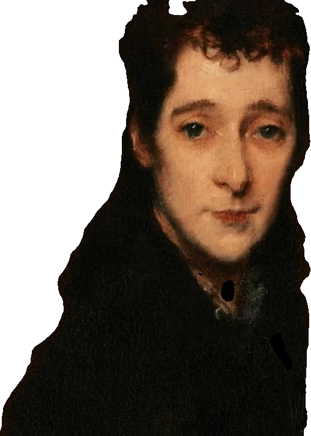
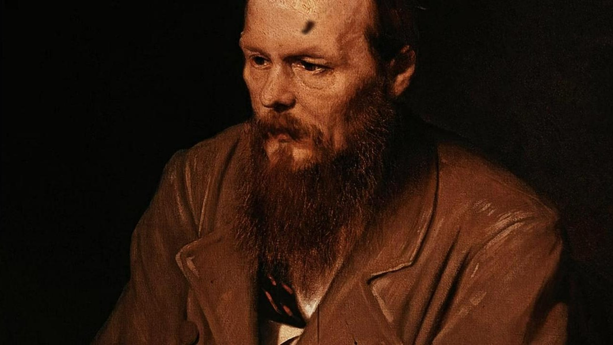
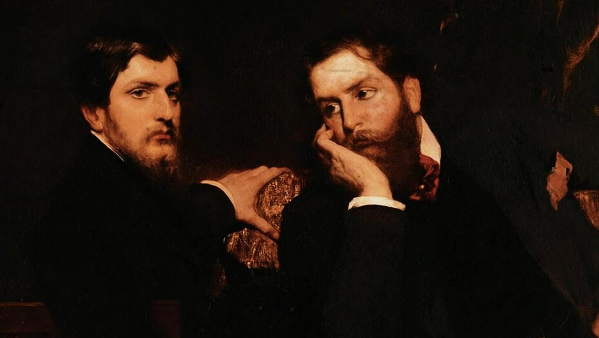
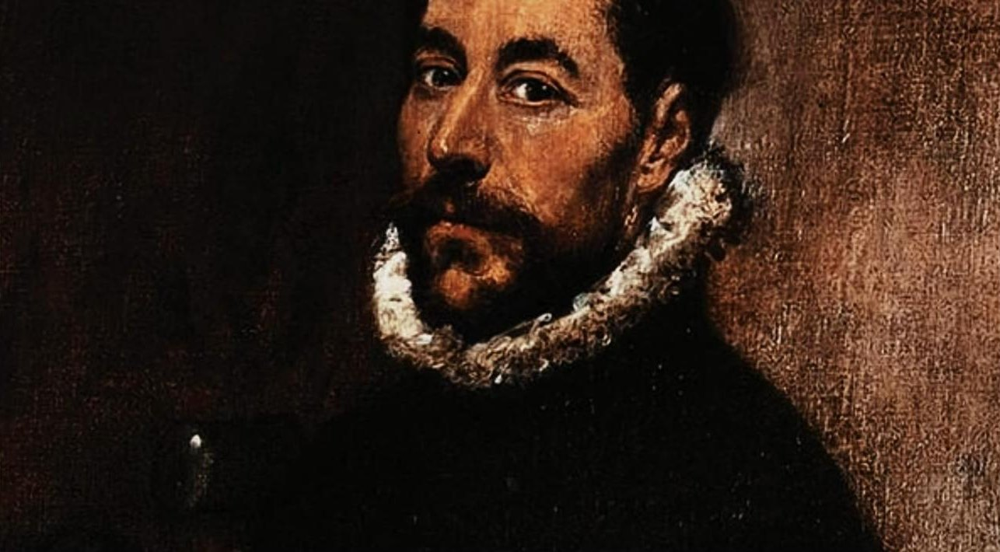
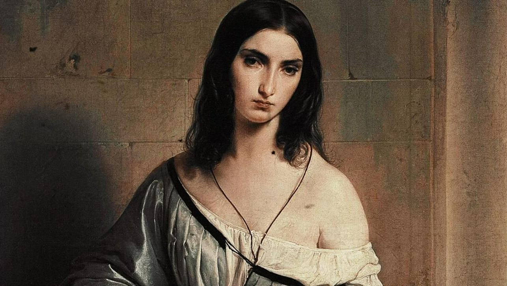
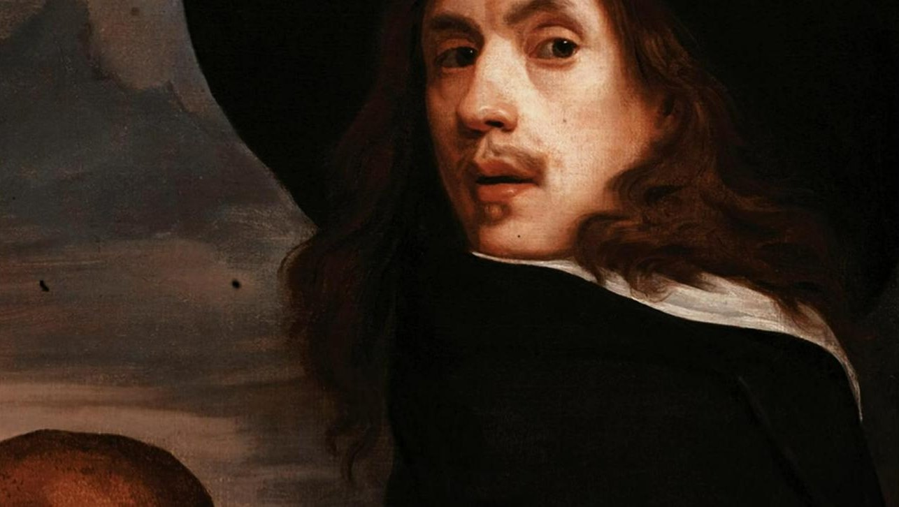
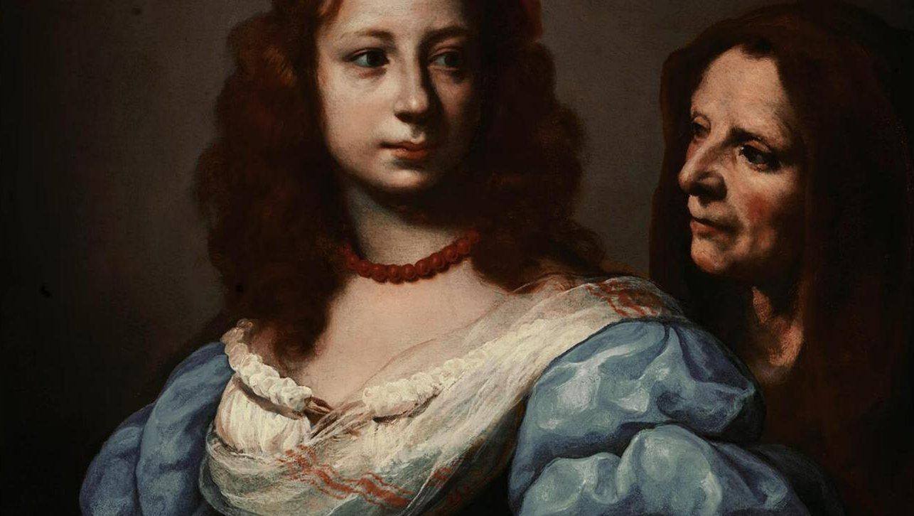

Fiódor DostoiévskiO Idiota, 1869
Ser bomé suficiente?
Quase todo mundo aprende cedo que um coração puro basta. E se essa for uma mentira confortável?
O Paradoxo
00 / 32 pinturas
Fiódor DostoiévskiO Idiota, 1869
Quase todo mundo aprende cedo que um coração puro basta. E se essa for uma mentira confortável?
I — O experimento
Dostoiévski coloca esse homem no centro de um mundo corroído por desejo, humilhação e autodestruição. E observa o que acontece.
II — O trem
A caminho de São Petersburgo, o príncipe Míchkin senta entre Rogójin, consumido pela obsessão, e Lébedev, que vive de tirar vantagem do caos. Ele não fala, não pensa e não deseja como eles.
III — Cem mil rublos
Rogójin tenta comprar Nastássia Filíppovna. Ela atira o dinheiro às chamas e, por um instante, arranca a máscara de todos na sala. Míchkin oferece outra coisa: amor sem julgamento.
IV — Bom demais
V — A luz dói
Não basta oferecer luz a quem aprendeu a viver no escuro. Às vezes ela dói mais do que a própria escuridão.
VI — O que fica
Ippolit atira a frase contra Míchkin como quem cobra uma dívida. O príncipe não responde. Dostoiévski também não: deixa a pergunta na sala, entre todos os quadros.

Atração principal
I · O santo
Míchkin chega de um sanatório suíço sem dinheiro, sem malícia e sem defesa. Perdoa antes da ofensa.
II · A ferida
Nastássia foi tomada ainda menina por quem devia protegê-la. Não suporta ser amada sem preço.
III · A obsessão
Rogójin ama como quem toma posse. Troca de cruz com Míchkin numa noite e ergue a faca na outra.
IV · O veredito
Petersburgo olha para o único homem bom da sala e só encontra uma palavra para ele.
Passe o mouse ou o dedo sobre os rostos
O que o romance cobra
Míchkin chega a Petersburgo sem armadura e vai embora sem ter salvado ninguém. Dostoiévski não ri dele. Tira a conclusão mais dura do livro: o coração puro é necessário e não basta. A bondade que atravessa aquela sala precisa aprender seis verbos. Passe o dedo ou o mouse nas cartas.

Ver a pessoa como ela é, e não como você precisa que ela seja.

Míchkin quis amar Aglaia e Nastássia ao mesmo tempo. Perdeu as duas.

Compaixão que só observa vira plateia do sofrimento alheio.

Dizer não a quem destrói também é um jeito de cuidar.

Rogójin não precisava de mais um perdão. Precisava de um limite.

Quem não se protege acaba sem nada para oferecer.
Os seis verbos vêm do vídeo. Os exemplos vêm do romance.
Quem estava na sala
Os rostos são pinturas que aparecem no vídeo. Nenhuma é retrato oficial dos personagens.
Sua vez
De onde tudo isto saiu